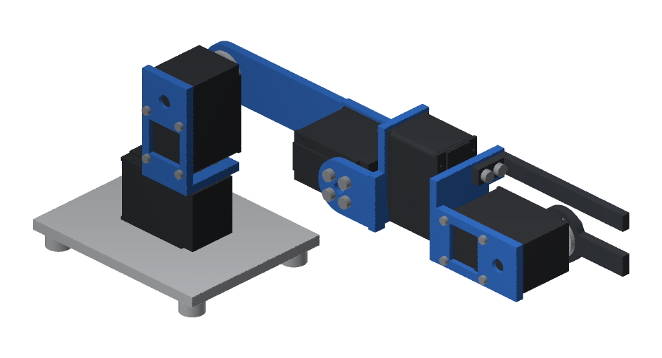
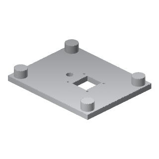
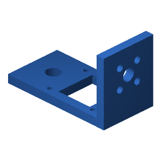
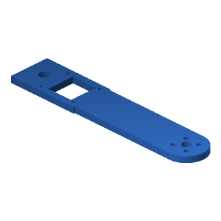
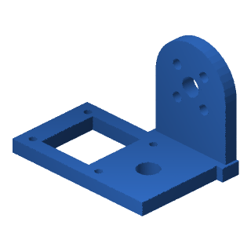
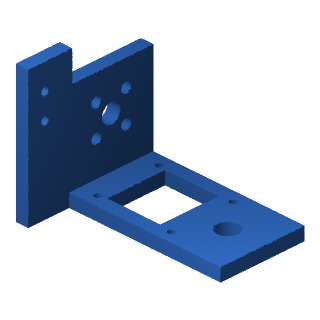
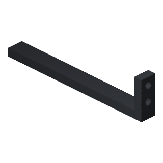
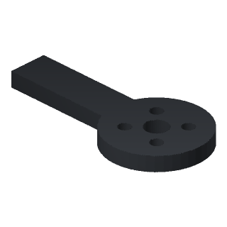

Print the RobotDSL Compact Arm
The RobotDSL Compact Arm is the RobotDSL Team's own design, drawn as CAD in code: a desk arm of four joints and a gripper on five Feetech STS3215 (12 V, ST-3215-C018) servos, 0.405 kg in all. Stretched out level it reaches 251 mm, holding 0.05 kg there. Every piece below prints without supports, as its file lies, on a printer's bed of 250 × 210 mm, 220 mm high. You can find it in the Studio's parts library, among the attachments.

- Each file holds its piece laid on the bed as it is printed: print it as it lies, without supports.
- PLA, printed solid (100% infill), as the robot's mass is worked out: 104 g in all.
- A 0.4 mm nozzle: the rims round the screw heads sunk from the bed, 1.2 mm at most, are laid as three of its lines, and holes along the bed, 12 mm across at most, as arches.
Pieces
| Picture | Piece | How many | Material | Files | Laid flat (mm) | Grams each |
|---|---|---|---|---|---|---|
 | base plate | 1 | PLA | STL · STEP | 100 × 80 × 13 | 51.6 |
 | shoulder bracket | 1 | PLA | STL · STEP | 54.4 × 28 × 32.9 | 9.2 |
 | shoulder plate | 1 | PLA | STL · STEP | 134.7 × 27.8 × 4 | 15.1 |
 | wrist bracket | 1 | PLA | STL · STEP | 50.6 × 33.8 × 35.6 | 8.9 |
 | palm | 1 | PLA | STL · STEP | 54.4 × 41.5 × 42.6 | 12 |
 | fixed finger | 1 | PLA | STL · STEP | 78.7 × 8 × 20 | 3.7 |
 | moving finger | 1 | PLA | STL · STEP | 53 × 26 × 4 | 3.7 |
Buy
- 5 × Feetech STS3215 (12 V, ST-3215-C018)
- 2 × clamps that hold the base plate to the table
- Socket head cap screws (ISO 4762):
- 4 × M2 x 8
- 22 × M3 x 6
- 16 × M2 x 6
Stretched out level with 0.05 kg between its fingers, its centre of mass comes 61 mm beyond the outline its feet stand in, turned the way it comes nearest: clamp its base plate to the table, a clamp each side of the base's servo, or it tips over. What drives its servos: a computer, an adapter for the servos' serial bus and a 12 V supply, which the arm does not carry; the design names no product of them.
Servos
Each servo's horn is fitted as it comes: set each joint's zero in its servo, the arm straight up and the moving finger upright beside the fixed one.
Licence
The files are published under CC BY 4.0, crediting the RobotDSL Team.